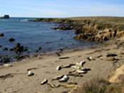
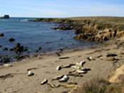

Just off California Highway 1, about a mile north of the Hearst Castle, is the perfect beach retreat for the local harbor seals. These giant sea mammals live their entire lives along the same stretch of coastline, spending much of their day hunting for fish, crabs, and shellfish, and the rest hauled out on the beach to lounge in the warm sun.
Harbor seals like to eat, and they need a high calorie diet to maintain the layers of fat that keep them warm in the cold Northern California Waters, and give them their thick sausage shape. They spend many hours during low tide resting on sandbars, beaches, and rocky islands, and spend high tide fishing. Harbor seals are the most vulnerable when they are out of the water and will quickly rush back into the waves if started. If they are disturbed too often, they can abandon their regular resting areas. For that reason, it is a Federal offence to scare a resting sea mammal back into the ocean.